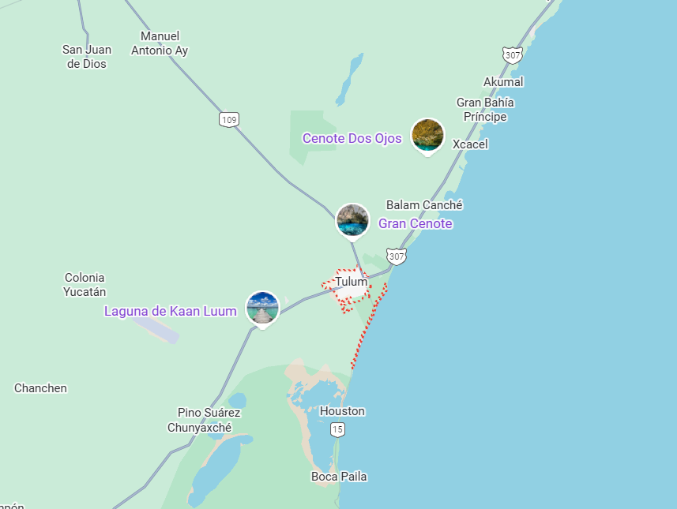

Es una antigua ciudad maya ubicada en la costa del Caribe, en el estado de Quintana Roo, México. Fundada alrededor del siglo XIII, fue un importante puerto comercial y punto estratégico del mundo maya. El sitio es famoso por sus estructuras construidas frente al mar, como El Castillo, el Templo del Dios Descendente y el Templo de los Frescos. Tulum refleja la conexión entre la arquitectura maya y el paisaje natural, combinando historia con playas de aguas turquesa. Hoy es uno de los destinos arqueológicos y turísticos más visitados por su belleza, su historia y su entorno paradisíaco.
Ubicación |
Información Esencial
|